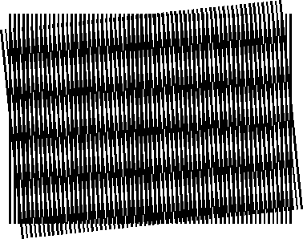

THE_MOIRE_EFFECT
Moire — an illusion that occurs when a fine pattern (lines and dots) are specifically hashed with another similar pattern, ultimately forming a third visual.


Moire — an illusion that occurs when a fine pattern (lines and dots) are specifically hashed with another similar pattern, ultimately forming a third visual.